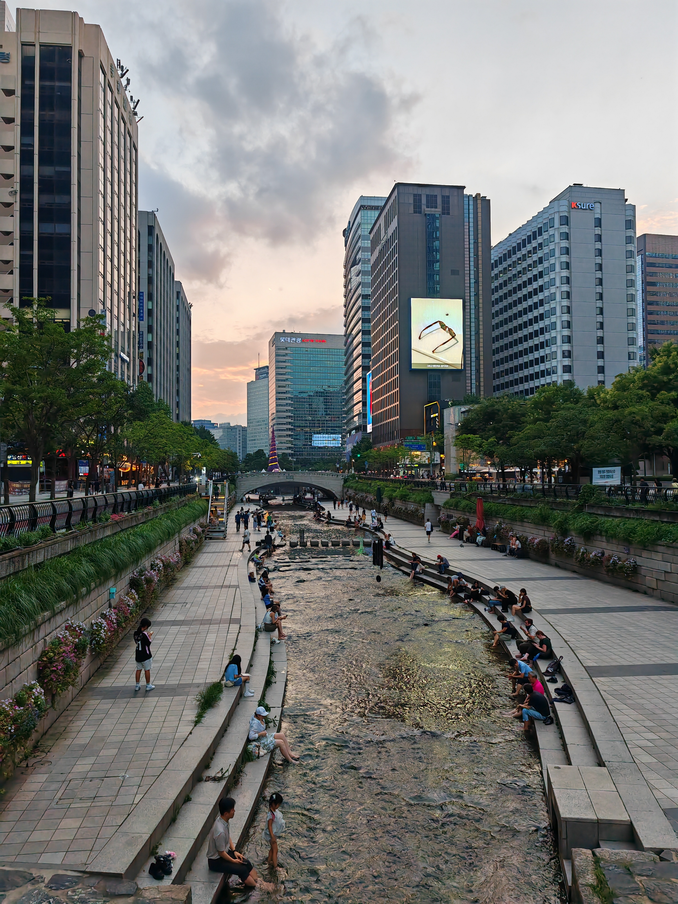
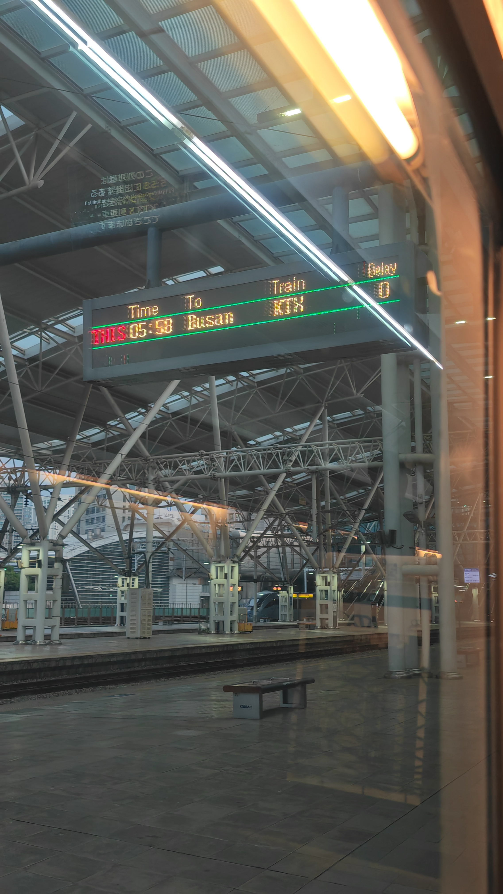
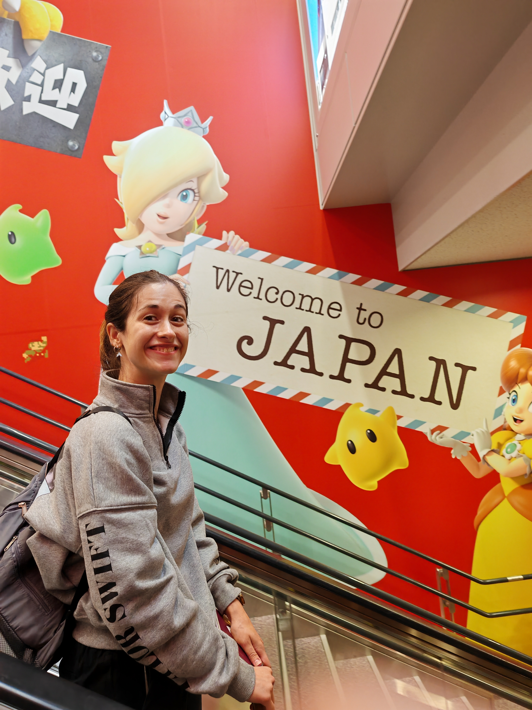
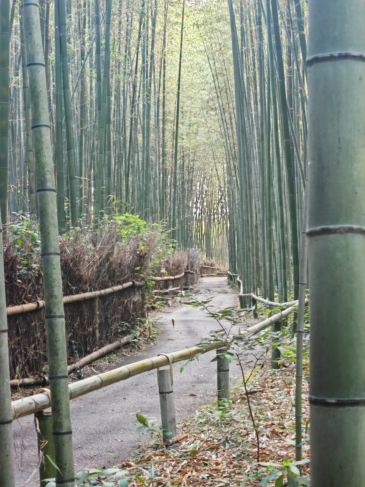
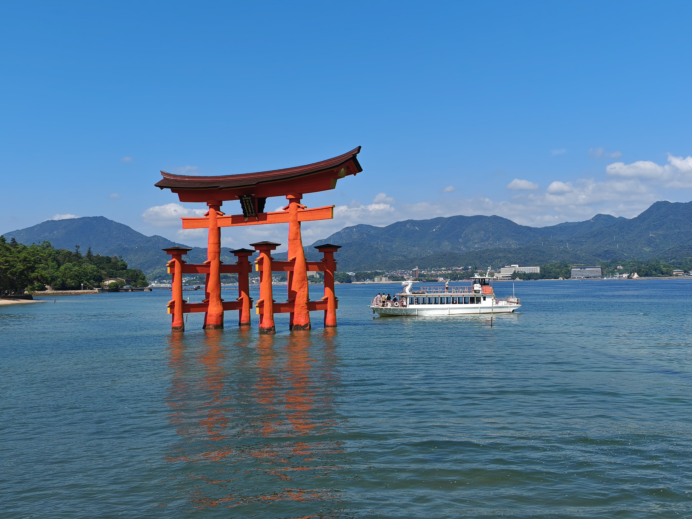
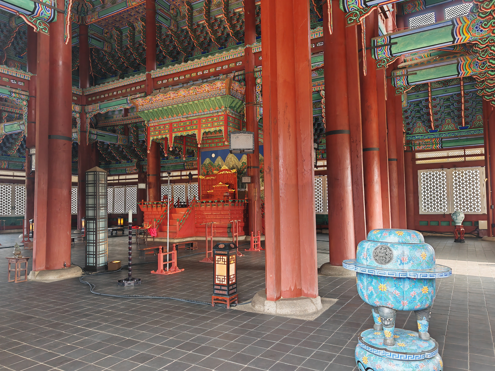

02 de agosto · Seúl
La primera noche siempre parece irreal.
La ciudad se encendió delante de nosotros: letreros, sabores nuevos y esa sensación de estar exactamente donde queríamos estar.
Un álbum vivo de las calles, templos, trenes y pequeños momentos que hicieron especial este viaje.
Pulsa cada parada para ver cómo se transforma la historia. La línea animada representa el recorrido completo.

La ciudad se encendió delante de nosotros: letreros, sabores nuevos y esa sensación de estar exactamente donde queríamos estar.

Después de las luces de Seúl, Busan fue una pausa azul. Un lugar para caminar sin prisa y guardar el día entero.
Las fotografías se convierten en postales, notas y pequeñas páginas superpuestas.




Mueve el cursor sobre la imagen. En el álbum final, este efecto aparecerá solo en los momentos más especiales.
Dale unos segundos para volver a recorrerlo.